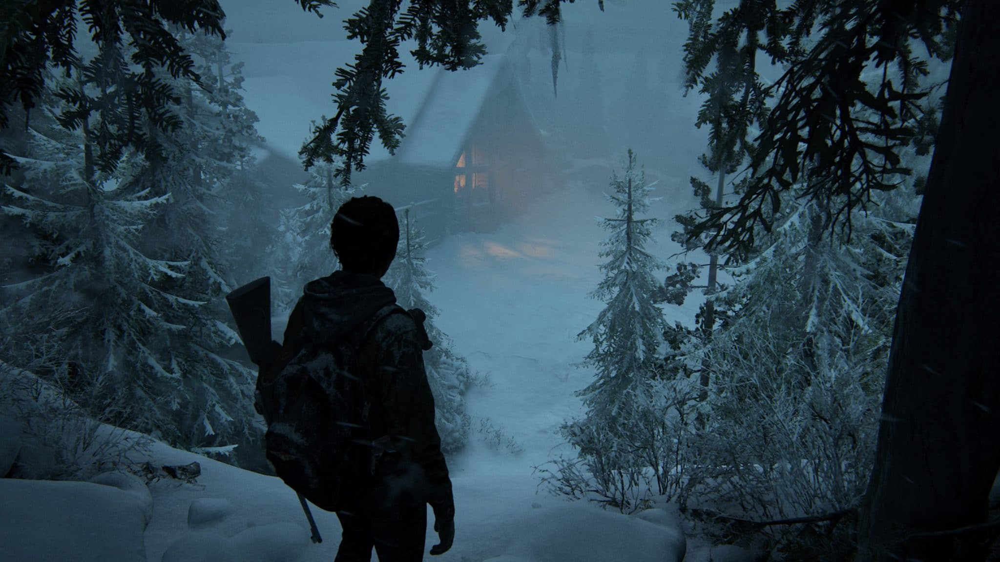
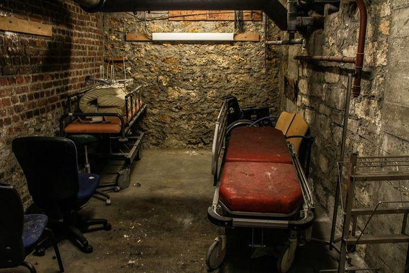

Etapes n°1

The last of escape
Vous trouverez sur la table un transmetteur radio qui étrangement est déguisée en sac à dos, il vous permettra
de contacter Jackson pour prévenir que vous êtes bloqué dans un sous-sol avec la horde vous chassant. Mais pour y
parvenir, vous aurez besoin de rentrer la fréquence du talkie-walkie de Jackson, le transmetteur radio étant très
ancien, il ne possède pas de micro, vous devrez donc communiquer en morse avec Jackson, pour cela, vous aurez un morceau
de notice contenant que très peu de lettre, avec celle si vous devrez faire passer vous information a Jackson. Étant dans un
monde post-apocalyptique, l'électricité n’existe plus, un de vos camarades devra tourner une manivelle pour alimenter le poste.
Une fois le contact effectué, vous avez une réponse de Jackson vous disant qu’ils viennent vous chercher, mais que ça prendra plus
de 3 heures pour arriver jusqu'où vous êtes. Vous envisagez donc de vous débrouiller seul pour sortir de ce pétrin.
Etapes n°2

Derrière une armoire du sous-sol, se trouve une salle secrète qui contient des écrans numérotés de 1 à 6 affichant des caméras
de l’extérieur où vous pouvez voir les infectés de plus en plus nombreux autour du chalet. Dans cette pièce, vous trouverez une
table avec beaucoup de feuilles qui contient des inscriptions sur une des feuilles, il y a un message codé écrit. Heureusement,
une autre feuille contient la clé pour décrypter le code. Le code décrypté dit : “La première partie du code de la porte est cachée dans
les écrans”. En regardant les écrans attentivement, on peut voir des numéros écrits sur les arbres ; les murs, etc. En associant les numéros
des écrans avec les numéros cachés, on obtient un code. De plus, des lettres sont écrites sur le sol, sur une des feuille, un chemin est dessiné
en associant les lettres écrites au sol et la feuille, on obtient la deuxième partie du code. En associant les deux parties, on obtient le code :
“73A19B84D65C” et ce code permet d’ouvrir la porte.
Etapes n°3
Derrière la porte, vous trouverez un étrange fusil a l'air futuriste, il ne possède pas de canon a la place seulement un entonnoir et un haut-parleur
placé au centre. Vous remarquez que l’objet a besoin d'être relié à quelque chose qui crée une fréquence, autrement dit le post radio sac à dos, mais
quelle fréquence mettre pour faire fonctionner le fusil et repousser les infecter. Les barricades commencent à céder et vous commencez à entendre des
infectés rentrer dans le chalet, il vous reste moins de 5 minutes pour pouvoir avoir l'espoir de vous en sortir. C’est à ce moment que vous avez remarqué
que le code du coffre contient des fréquence radio qui se présente ainsi 73 A 19 B 84 D 65 C mais dans quel ordre les mettre, bien sûr l’ordre de l’alphabet.
Vous rentrez donc 73 Mhz, 19 Mhz, 65 Mhz et enfin 84 Mhz. Après avoir entré ces fréquences, le canon a son commence à émettre un son strident à peine supportable
pour vos oreilles. Après le son fini, vous n’entendez plus aucun bruit. Les infectés sont partis, sont ils morts ? Vous sortez de votre sous-sol et voyez tous les
infectés au sol, tous assommés, vous en profitez pour prendre la fuite.